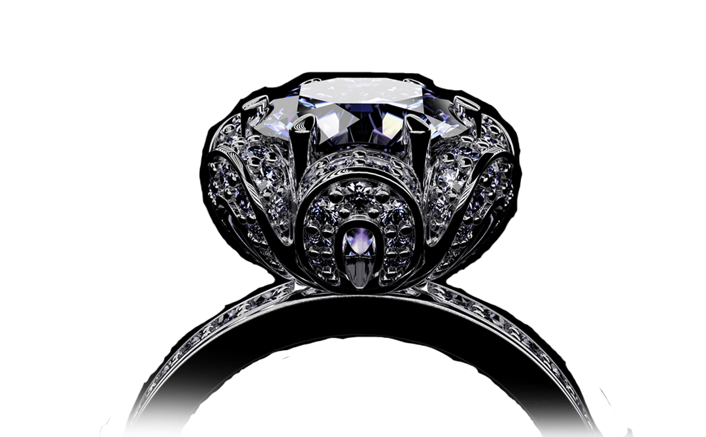

穿越八世紀的璀璨經典 “ 鑽中有愛，永恆存在 ”  藝術啟蒙 一個具貴族傳奇色彩，來自法國的頂級珠寶品牌，設計靈感起源路易十四皇朝鼎盛的時期；當時皇宮充滿奢華與璀璨的氣息，無論是服飾珠寶或是生活起居的各種用品，在所有的細節上傾注了全付的精力，不容許一絲絲的差池與重複。 SCROLL DOWN
BRAND SRORY 品牌故事 法蝶珠寶Papillon，法文意謂『蝴蝶』，之所以用蝴蝶為名，是在刻劃女人生命中點點滴滴的幸福歷程，也代表了法蝶創辦人 M & J 創業的心路歷程.... READ MORE SPECIAL DESIGN 獨特設計 法蝶珠寶的設計團包括國內外才華滿溢的設計師，其中還包含需多美國GIA設計畢業的資深設計師，資深設計師們將時尚與藝術的元素融合在法蝶的商.... READ MORE GUARANTEE SERVICE 售後服務 凡在法蝶購買之商品，憑保證書，初次享有免費改圍，終生另享有免費電鍍或改圍兩次；鉑金戒指享有一次改圍或電鍍(固定圍除外); K金項鍊斷修乙次.... READ MORE Quality Assurance 品質堅持 一般所謂的「鑽石鑑定證書」或「鑽石等級證書」，法蝶稱它為「國際鑑定證書」(International Grading Certificate)。這報告是.... READ MORE CHARITY SERVICE 公益服務 法蝶珠寶，幸福傳承 – 帶給台灣人幸福的百貨珠寶品牌！今年已邁入31周年! 一直以來，積極為台灣盡一份心力，在不景氣時，更帶頭做公益 READ MORE